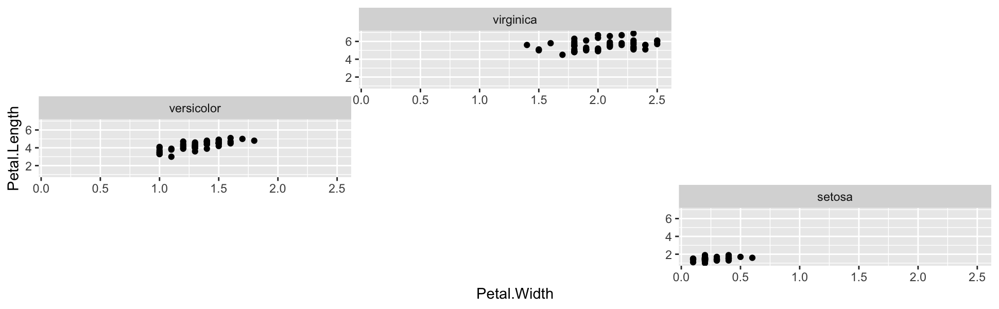
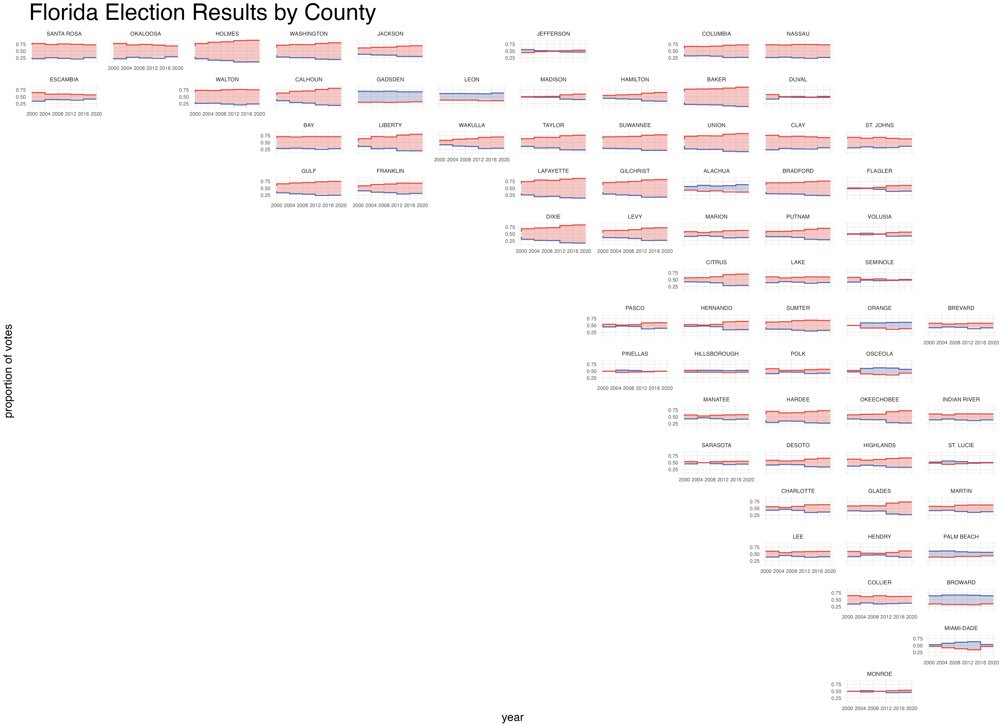

Introduction
facetwarp is an extension of ggplot2, specifically aimed at assisting in arranging faceted plots.
Typically facet_wrap positions your facets alphabetically, but with facet_warp you might:
- layout facets as their categories appear on a map 🗺
- arrange facets as if they themselves are points in a 2D scatter plot ⠞

Table of contents
How it Works
facetwarp uses a solution to the Linear Assignment Problem developed by Jonker & Volgenant to take facets which can be expressed some 2D space, and snap them to a regular grid.
Usage Examples
Hello facet_warp 🪄
Try it out! (note the warp not wrap after the facet) ✨
library(ggplot2)
library(facetwarp)
ggplot(iris)+
geom_point(aes(x=Petal.Width, y=Petal.Length))+
facet_warp(vars(Species), macro_x='Sepal.Width', macro_y='Sepal.Length', nrow = 3, ncol = 3)
facet_warp has re-positioned the facets! In fact, they are arranged to mimic the arrangement we saw above:
-
virginicaat the top due to its highmedian_Sepal.Length -
versicolorat the left due to its lowmedian_Sepal.Width -
setosaat the lower-right due to its lowmedian_Sepal.Lengthand highmedian_Sepal.Width
A more interesting example:
library(dplyr)
library(ggplot2)
library(facetwarp)
elections <- read.csv(file='https://gist.githubusercontent.com/mattdzugan/bf5bc48fad1850af59ac83a411f8c0d6/raw/8da67b51df907508f7c859fe29fc4637397513d8/County_Election_Data.csv')
ggplot(elections %>% filter(state_po == 'FL'))+
labs(title='Florida Election Results by County',
y='proportion of votes')+
theme_minimal()+
theme(legend.position = 'None',
panel.spacing = unit(1.2, "lines"),
axis.title = element_text(size = 18),
plot.title = element_text(size = 36),
axis.text = element_text(size = 8))+
geom_rect(aes(xmin=year-4, xmax=year, ymin=(1-candidate_votes/total_votes), ymax=candidate_votes/total_votes, fill=party, alpha=candidate_votes/total_votes>.5))+
geom_step(aes(x=year, y=candidate_votes/total_votes, color=party), direction='vh', linewidth=0.8)+
scale_alpha_manual(values=c(0,0.3))+
scale_color_manual(values=c('#5768ac','#e24a41'))+
scale_fill_manual(values=c('#5768ac','#e24a41'))+
scale_x_continuous(limits=c(2000,2020), breaks = seq(2000,2020,4))+
facet_warp(vars(county_name),
macro_x = 'lon',
macro_y = 'lat',
ncol = 12, nrow = 15)
Note the familiar shape of the state of Florida, since we used lat and lon as our macro variables.
Isn’t this the same as geofacet?
The idea of facetwarp is similar to that of geofacet, providing a few additional benefits:
- The grid-arrangement is computed automatically given numerical data (such as
latandlon) - which unlocks the potential to create beautiful arrangements on ANY SET OF DATA - Since the arrangements are computed automatically, they are not limited to geospatial arrangements, but can use any numerical dimensions.
How to Contribute
This repo is just a brand new baby, so please open an issue, or reach out on twitter… i mean.. x.
See Also
- geofacet - R Package for beautiful hand-curated layouts
- Linear Assignment Problem
- Jonker & Volgenant